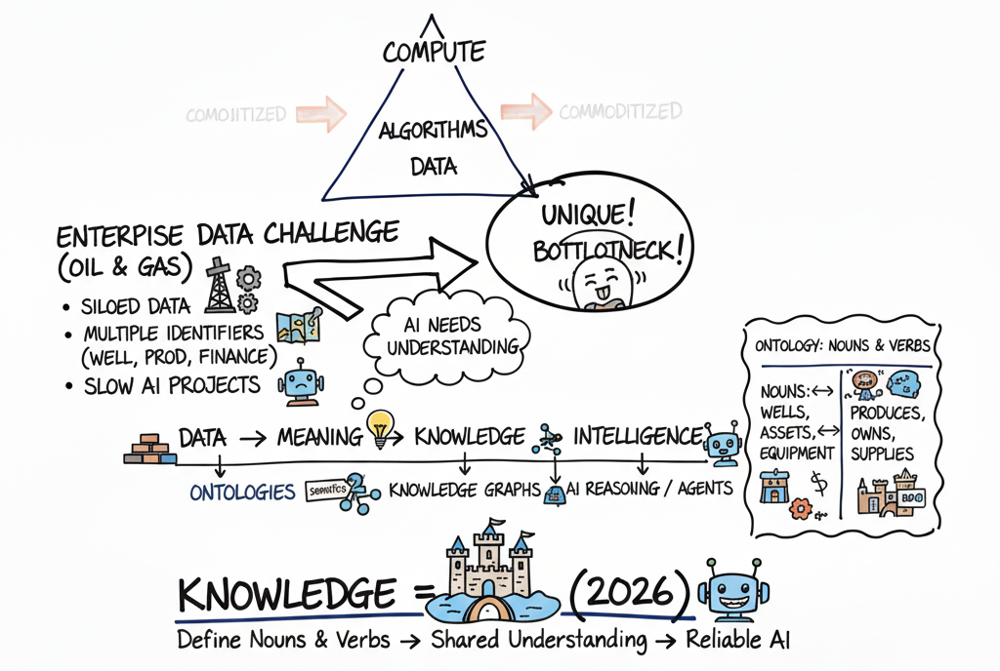
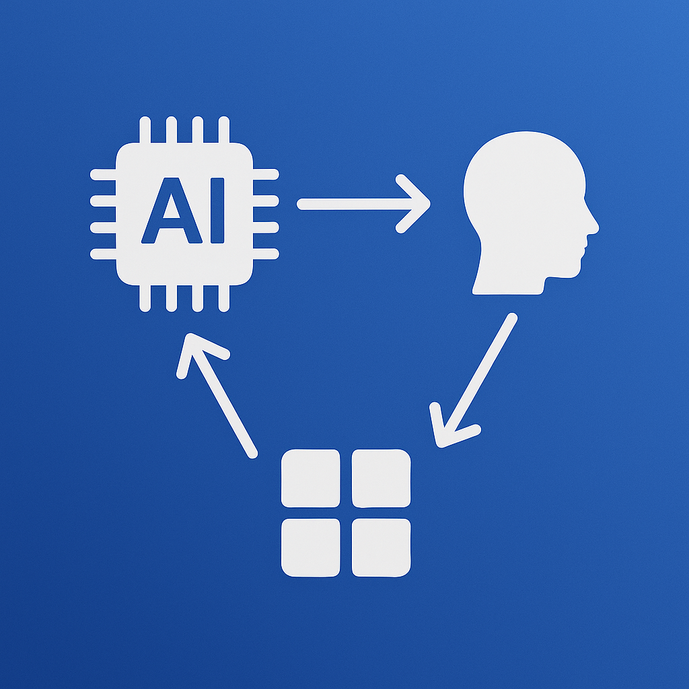

A personal site by Oscar Marin — notes on data, AI, semantics, and the craft of building intelligence into the systems that run the modern enterprise.
Hi, I'm Oscar Marin — a technology consulting leader and Managing Director at EY, specializing in Data and AI. I work closely with some of the world's companies to help them harness the power of data, accelerate digital transformation, and drive sustainable innovation across their value chain.
With a strong background in software engineering, data architecture, and AI strategy, I bridge the gap between business and technology. Whether I'm advising on MLOps, designing scalable applications, or leading workshops on generative AI, I'm passionate about delivering impactful solutions that empower organizations to thrive in a changing world.
Outside of work, I'm a proud husband and father of two daughters, a lifelong learner, and an advocate for purposeful living. I also enjoy building side projects, writing open-source tools, and exploring the intersection of technology and everyday life.

How enterprises can unlock AI value by turning data into shared knowledge through semantic models and knowledge graphs.
Read →
How a new open standard is making AI smarter, faster, and more useful.
Read →Why semantic models are the backbone of intelligent, scalable AI agents in the enterprise.
Read →How semantic models empower conversational AI to better understand your business.
Read →